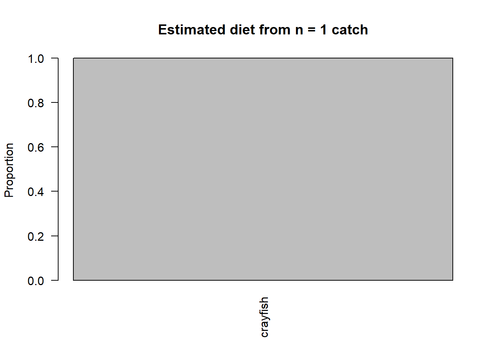
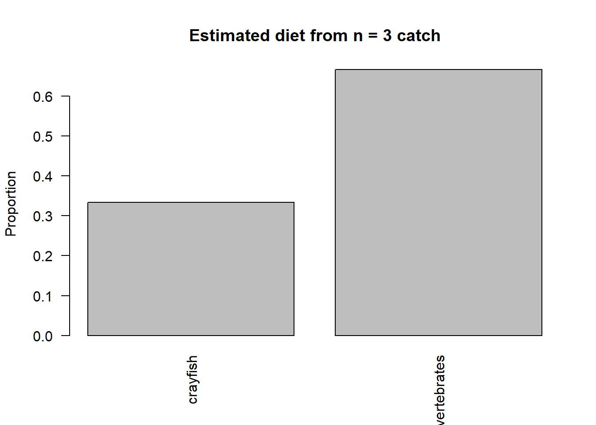
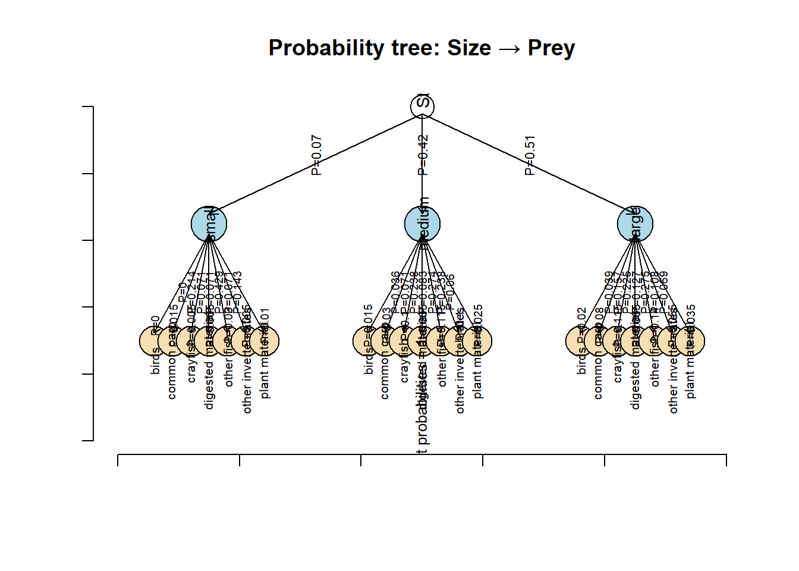

Investigate a real biological question: Is climate change shifting the catfish diet?
Learn how probabilities are used to describe biological data.
Use R to generate, explore and analyse diet data.
See how sample size affects how reliable probability estimates are.
Calculate probabilities to: describe how often different prey types are eaten, group prey into biologically meaningful categories, Estimate probabilities of repeated events and explore conditional probability, asking whether diet depends on fish size.
Interpret a probability tree linking catfish size and prey.
Reflect on the practical difficulties of ecological studies, such as limited sampling, natural variability and environmental differences between lakes.
By the end of the session, you should understand why probability is important in biology and how it can be used to study changes in animal diets under climate change.
1. Is climate change shifting the catfish diet?
Catfish (Silurus glanis) are among the most adaptable freshwater fish in rivers, lakes and ponds. They are opportunistic feeders, consuming a wide variety of prey depending on what is available in their environment. Scientists and anglers alike report that catfish will eat insects, crustaceans, worms, mollusks and even other fish in the wild, and may supplement their diet with plant material or carrion when other food is scarce. This flexible diet allows catfish to survive in many habitats and to shift what they eat over time as conditions change.
Because catfish are generalist predators and scavengers, understanding what they currently eat in a particular ecosystem is an essential first step before we can ask whether their diet is changing due to environmental pressures such as climate change. In the context of climate change, shifts in water temperature, prey availability, and seasonal patterns can alter how often catfish encounter and consume different types of prey. But to measure change, we must first describe the baseline diet (i.e. what catfish are currently eating) and quantify the relative frequencies of different prey types.
In this practical, we will treat each stomach or feeding observation from a catfish as a random event drawn from the population’s diet. By estimating the probabilities of each prey type being eaten under current conditions, we build a statistical description of the catfish’s diet. Later, this framework could be used to compare with future data to assess whether climate change is shifting these dietary probabilities, for example, making some prey like insects more or less likely in the diet over time.
The first biological task you will tackle in this practical is therefore:
What is the current diet of catfish? (Specifically: what are the probabilities that a catfish’s stomach contains different preys?)
You will “collect” and analyse sample diet data to estimate the probabilities of different prey items (e.g., small fish, insects, crustaceans, worms), and explore how sampling size and variability affect your estimates.
Note: Imagine we are using an analytically method that is not very sensitive and we can only measure the dominant aliment found in a catfish stomach. Therefore, for each fish we collect, we will obtain only one prey value.
Take a look at the data of all catfish at the lake:
# This chunk creates the dataset, make sure you run it before starting coding later onprey_types <-c("common carp","other fish", "birds", "crayfish", "other invertebrates", "digested material", "plant material")prey_probabilities <-c(0.15, 0.25, 0.05, 0.20, 0.15, 0.10, 0.10)n_fish <-200catfish_lake <-data.frame(fish_id =1:n_fish,# body size in cm size_cm =round(runif(n_fish, min =40, max =160), 1),# Dominant prey item found in the stomachprey =sample(sample(prey_types,size = n_fish,replace =TRUE, prob = prey_probabilities)))head(catfish_lake)
fish_id size_cm prey
1 1 115.3 other invertebrates
2 2 81.2 common carp
3 3 110.1 plant material
4 4 87.0 other fish
5 5 109.3 crayfish
6 6 68.0 plant material
We have:
fish_id: this is just the “name” of each specific catfish
size: The body size of the catfish in cm
prey: The dominant prey found within the catfish stomach
QUESTION 1: How many samples would you suggest collecting in order to estimate the probabilities of each prey type to be found in a catfish stomach? Which aspects would you recommend considering?
ANSWER:
QUESTION 2: Acording to Carol et al. (2009), the possible preys or food categories to be found are:
Catfish’s potential preys
common carp, other fish, birds, crayfish, other invertebrates, digested material, and plant material
Should the sample size be smaller or larger if we would expect more food categories?
ANSWER:
QUESTION 3: Let’s use statistical language. In this example we need to calculate the proportion of times that an event occur. In this case, an event would be a measure of the dominant food category found in a catfish. The outcomes are the catfish potential preys (common carp, other fish, birds, crayfish, other invertebrates, digested material, and plant material). Would you describe the events to be mutually exclusive or non-exclusive events? Are the events independent?
Note: Have a deep thought about the last question, since we might need more information to provide a fully certain answer. Independence of the events when sampling is a common assumption in biological experiments, do you think is a correct assumption to take?
ANSWER:
QUESTION 4: Let’s collect some data. I have prepared a function that “samples” the population, as if you were at a lake and you had cached a fish, analyse it immediately and receive the result of the dominant pray in its stomach. Run this code to define the function and use the following chunk to sample your first catch:
## ---- define-catch-function ----catch_and_analyze <-function(df, n =5, replace =FALSE, seed =NULL, plot =TRUE) {# df: your dataset (catfish_lake)# n: number of fish to catch/sample# replace: sample with replacement? default FALSE (realistic lake sampling)# seed: optional numeric seed for reproducibility# plot: whether to draw a barplot of the estimated diet from the catchif (!is.null(seed)) set.seed(seed)if (!("prey"%in%names(df))) stop("Dataframe must contain a 'prey' column.")if (n <=0) stop("n must be > 0")if (n >nrow(df) && replace ==FALSE) {warning("n is larger than the dataset; sampling with replacement instead.") replace <-TRUE } sampled_idx <-sample(seq_len(nrow(df)), size = n, replace = replace) sampled <- df[sampled_idx, , drop =FALSE] prey_counts <-table(sampled$prey) prey_props <-prop.table(prey_counts)# dominant prey (may be more than one if tie) max_count <-max(prey_counts) dominant <-names(prey_counts)[prey_counts == max_count]# Print summary to consolecat(sprintf("Caught %d fish (replace = %s).\n\n", n, ifelse(replace, "TRUE", "FALSE")))cat("Sampled fish (first rows):\n")print(head(sampled))cat("\nPrey counts:\n")print(prey_counts)cat("\nPrey proportions:\n")print(round(prey_props, 3))if (length(dominant) ==1) {cat(sprintf("\nDominant prey in this catch: %s (n = %d)\n", dominant, max_count)) } else {cat(sprintf("\nDominant prey (tie): %s (n = %d)\n", paste(dominant, collapse =", "), max_count)) }if (plot) { old_par <-par(no.readonly =TRUE)on.exit(par(old_par), add =TRUE)barplot(prey_props,main =sprintf("Estimated diet from n = %d catch", n),ylab ="Proportion",las =2) }# Return a structured result invisibly result <-list(sampled = sampled,counts =as.integer(prey_counts),counts_names =names(prey_counts),proportions =as.numeric(prey_props),proportions_names =names(prey_props),dominant = dominant )invisible(result)}
## ---- first-catch ----# Example: sample 1 fish from catfish_lakefirst_catch <-catch_and_analyze(catfish_lake, n =1, replace =FALSE, plot =TRUE)
Caught 1 fish (replace = FALSE).
Sampled fish (first rows):
fish_id size_cm prey
143 143 97.6 crayfish
Prey counts:
crayfish
1
Prey proportions:
crayfish
1
Dominant prey in this catch: crayfish (n = 1)

QUESTION 5. Now add multiple chunks here to test how the data changes. Based on the observations, which sample size would be adequate? (Try at least n = 3, 5, 10, 50, 100)
# Add more lines here or more chunks to see the results of sampling different number of fishes by editing "n"# first_catch <- catch_and_analyze(catfish_lake, n = 1, replace = FALSE, plot = TRUE)first_catch <-catch_and_analyze(catfish_lake, n =3, replace =FALSE, plot =TRUE)
Caught 3 fish (replace = FALSE).
Sampled fish (first rows):
fish_id size_cm prey
42 42 115.5 other invertebrates
38 38 56.2 crayfish
162 162 76.6 other invertebrates
Prey counts:
crayfish other invertebrates
1 2
Prey proportions:
crayfish other invertebrates
0.333 0.667
Dominant prey in this catch: other invertebrates (n = 2)

# Add your code here.
QUESTION 6. Functions to obtain probabilities. We want to explore which specific plants the catfish are eating, but we know not all of them eat plants. Calculate the probability of sampling a fish that has a plant in its stomach so we can plan the fieldwork costs.
Hint: You can use these functions (just copy and paste it), make sure you understand what they are doing:
prey_counts <- table(catfish_lake$prey) (1)
prey_probs <- prop.table(prey_counts)
After this, you can ask for the probability of each category by using this format: prey_probs["common carp"] and changing the name of the prey. Make sure you type the name of the prey correctly. In addition, could you calculate the probability using the datasetfirst_catch with n=10 instead of the catfish_lake dataset? (To do so replace catfish_lake$prey in example (1) above, with first_catch$sampled$prey) Do you get similar results?
# Add your code here.
QUESTION 7. In ecological studies, researchers often group prey items into functional categories rather than analysing every species separately. In this case, both common carp and other fish represent fish prey, which are typically larger, more energy-rich, and harder to catch than invertebrates or plant material. In order to understand the catfish role as a top predator in the food web, calculate the probability of fishing a catfish that has eaten another fish (consider that there are two fish categories (other fish and common carp).
Hint: In other words: the probability of catching a fish that has eaten “other fish” OR “common carp”. Sum probabilities considering that they are objects. For example: prey_probs["birds"] + prey_probs["crayfish"] (make sure you understand why this is Additive probability).
NOTE! Use as.numeric() to avoid confusion of the probability name. For example: as.numeric(prey_probs["birds"] + prey_probs["crayfish"])
# Add your code here.
QUESTION 8. Calculate (1) the probability of fishing three fishes that have eaten plants (assuming independent catches), and (2) the probability of fishing three fishes, one has eaten plant material and two have eaten digested material
Hint: This is a probability of repeated events. Make sure you understand why. Sequence of events does not matter here, imagine we have three researchers fishing at the same time.
# Add your code here.
QUESTION 9. Conditional probability. According to Carol et al. (2009) the developmental stage of catfish might affect their diet. Is the probability of eating crayfish the same for small and large catfish?
First we will create the categories of size based on the catfish sizes
## ---- create-size-class ----catfish_lake$size_class <-cut( catfish_lake$size_cm,breaks =c(0, 50, 110, Inf),labels =c("small", "medium", "large"))table(catfish_lake$size_class) # What is this function "table" doing?
small medium large
14 84 102
For this exercise I am giving you the code, but I feel at this point you should be able to understand the elements since they are similar to what you have been coding until now. Run this code below and explain in your own words the results.
## ---- probability within a given event ----# P(crayfish | large)large_fish <- catfish_lake$size_class =="large"mean(catfish_lake$prey[large_fish] =="crayfish")
QUESTION 10. Build a probability tree to further discuss conditional probabilities. Test yourself: do you understand the tree and the numbers depicted? Try to calculate them.
# DO not worry about understanding this code## ---- size-probabilities ----size_prob <-prop.table(table(catfish_lake$size_class))size_prob
prey
size_class birds common carp crayfish digested material other fish
small 0.00000000 0.21428571 0.07142857 0.07142857 0.42857143
medium 0.03571429 0.07142857 0.23809524 0.08333333 0.27380952
large 0.03921569 0.15686275 0.22549020 0.12745098 0.27450980
prey
size_class other invertebrates plant material
small 0.07142857 0.14285714
medium 0.23809524 0.05952381
large 0.10784314 0.06862745
## ---- joint-probabilities ----prob_tree <-sweep( prey_given_size, 1, size_prob, FUN ="*")prob_tree
prey
size_class birds common carp crayfish digested material other fish
small 0.000 0.015 0.005 0.005 0.030
medium 0.015 0.030 0.100 0.035 0.115
large 0.020 0.080 0.115 0.065 0.140
prey
size_class other invertebrates plant material
small 0.005 0.010
medium 0.100 0.025
large 0.055 0.035
# All joint probabilities should sum to 1sum(prob_tree) ==1
# draw the tree plot_probability_tree(catfish_lake)

Note: Sometimes it is convenient to look at the plot in a bigger shape, to zoom in to specific parts of it. To do so, plot it at the “Plots” section of the RStudio top right section by coping the code and run it in the console (below). Coy this code: plot_probability_tree(catfish_lake) and explore the plot.
Final reflections
You have been monitoring catfish diet over time to detect climate-change effects in multiple lakes that are at different temperatures. Which prey probabilities would you track, and why would sample size and fish size matter?
Explain in your own words the difficulties of planning a study to test if small catfish are eating crayfish less often in an altitude gradient (multiple lakes at different heights, i.e. different temperatures). Take into account that lakes have different sizes, and that the abundance of the prey is not the same in all of them.
In addition…
The type of problem you solved today is very similar to other research questions. How would you use this code to understand which pollinator visits an invasive flower (outcomes: bee, fly, butterfly, beetle… ), or quantify the causes of seed mortality to biofortify seeds in industry (outcomes: drought, herbivory, fungus, competition), or caracterise microhabitat use by lizards (outcomes: rock, grass, sand, shrub).
How would you create a good visualisation of the data we have been playing with today? What do you think about these ones? Which prey types show the strongest association with catfish size? Which visualisation helps you see this most clearly, and why?